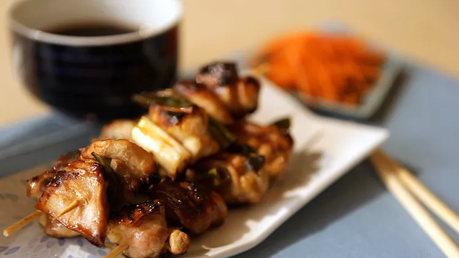

Ty's GOATED CHURRO RECIPE

Description:
in this recipe you will learn how to make my GOATED CHICKEN YAKITORI, these are goated because they are the great of all time, no one can make better chicken yakitori than me. Im here today to teach you how to make it.
Ingredients:
- 10 wooden skewers
- 4 skinless, boneless chicken thighs, cut into 1-inch cubes
- 4 scallions, sliced into 1-inch pieces
- ½ cup sake
- ½ cup soy sauce
- 3 tablespoons mirin
- 2 tablespoons white sugar
- 1 teaspoon vegetable oil, or to taste
Steps:
- Soak 10 wooden skewers in cold water for 15 minutes.
- Thread chicken pieces onto the soaked skewers, alternating with scallions.
- Combine sake, soy sauce, mirin, and sugar in a small saucepan and bring to a boil. Reduce heat and simmer for 5 minutes. Reserve 1/2 of the sauce for dipping.
- Heat a grill pan over high heat and lightly brush with vegetable oil. Add skewers and cook until chicken is no longer pink in the center, basting frequently with 1/2 of the sauce, 7 to 10 minutes per side.
back to home page